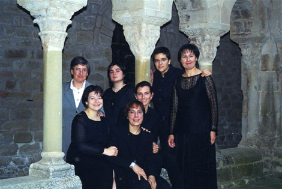

COR DEL TALLER D'ESTUDIS MEDIEVALS
Intèrprets:
Montserrat Oliveras, directora.
6-7 cantants.
Especialitzat en cant gregorià i polifonia primitiva, va ser fundat l'any 1989 i està format per veus
femenines.
Programa:
- Ludica Me Introit: De Cuaresma
- Kyrie De Quaresma
- Qui Meditabitur Comunió De Cuaresma
- Gloria
- Laus Hymne De Diumenge De Rams; Crucem Antífona
- Popule Meus Improperis
- Ubi Caritas Ofertori
- ...